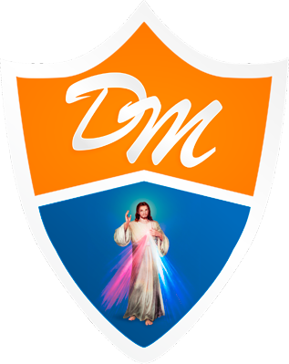

Análisis y Diagnóstico de
Sistemas de Información
Presentación ejecutiva e interactiva de la estructura estratégica, evolución histórica, modelo de negocio y arquitectura tecnológica (Hardware y Software) de la institución educativa.
👥 Equipo de Exposición
Carlos Fabricio Almonacid
Yagely Isabelita Cabrera
Xavier Russell Figueroa
Lintsay Karlely Morales
Docente: Alex Heraclides Baldeon R.
Ciclo: 2026
Facultad: Ciencias Empresariales
Sede: Huánuco, Perú